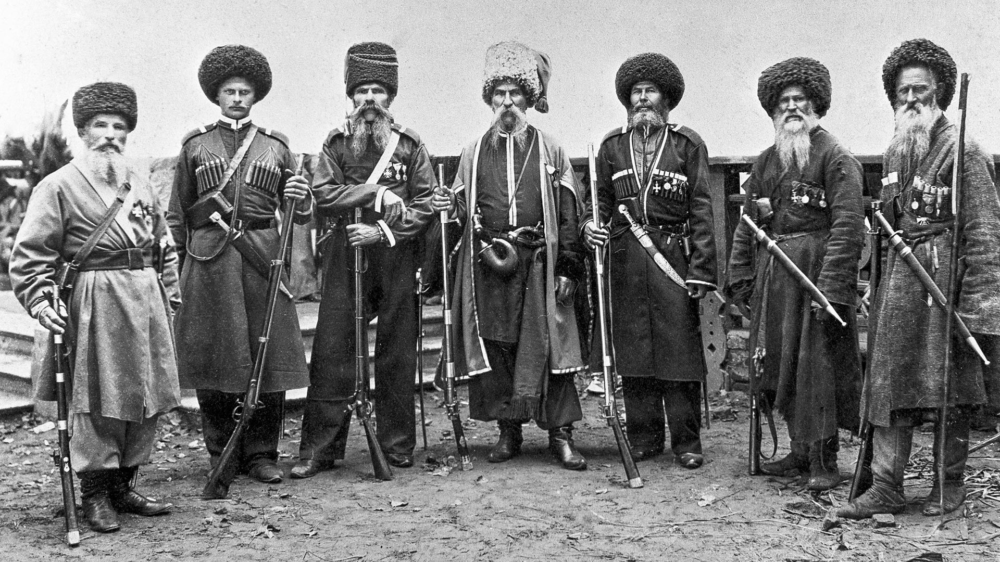

Kazakhstan In Russian Empire (1847 - 1922 yy.)
Russian traders and soldiers began to appear on the northwestern edge of Kazakh territory in the 17th century, when Cossacks established the forts that later became the cities of Oral (Ural'sk) and Atyrau (Gur'yev). Russians were able to seize Kazakh territory because the khanates were preoccupied by Kalmyks (Oirats, Dzungars), who in the late 16th century had begun to move into Kazakh territory from the east. Forced westward in what they call their Great Retreat, the Kazakhs were increasingly caught between the Kalmyks and the Russians. Two of the Kazakh Jüzes were dependant on Oirat Huntaiji.
In 1730 Abul Khayr, one of the khans of the Junior Jüz, sought Russian assistance. Although Abul Khayr's intent had been to form a temporary alliance against the stronger Kalmyks, the Russians gained permanent control of the Junior Jüz as a result of his decision. Shortly thereafter the Middle Jüz's Khan Semeke agreed to suzerainty under the same terms. Neither khan remained very loyal to the Russians, but from this point Russian sovereigns began to assert the right to appoint the khans of the Junior and Middle Jüzes and to exert greater influence on them. The Kazakhs in turn began to view the khanate with greater suspicion, as khans increasingly sought Russian help against their rivals within the Khanate. Although the Khanate recovered a degree of independence under Ablai from 1750-1778, his son failed to unite even the Middle Jüz, and in 1798, the Russians attempted direct rule over the Middle Jüz, establishing a tribunal at Petropavlovsk. In 1824, the Russians abolished the khanate of the Middle Jüz. The Senior Jüz managed to remain independent until the 1820s, when the expanding Kokand Khanate to the south forced the Senior Jüz khans to choose Russian protection, which seemed to be the lesser of two evils.

The conquest of Kazakhstan by Russia was slowed by numerous uprisings and wars in the 19th century. For example, uprisings of Isatay Taymanuly and Makhambet Utemisuly in 1836–1838 and the war led by Eset Kotibaruli in 1847–1858 were some of such events of anti-colonial resistance.
In 1863 Russian Empire elaborated a new imperial policy, announced in the Gorchakov Circular, asserting the right to annex "troublesome" areas on the empire's borders. This policy led immediately to the Russian conquest of the rest of Central Asia and the creation of two administrative districts, the General-Gubernatorstvo (Governor-Generalship) of Russian Turkestan and that of the Steppe. Most of present-day Kazakhstan was in the Steppe District, and parts of present-day southern Kazakhstan, including Almaty (Verny), were in the Governor-Generalship.


Significant events and transformations during the Russian Empire era
Incorporation into the Russian Empire
Russian Expansion
Abolition of the Kazakh Khanate
Land Reforms
Settlement Policies
Railway Construction